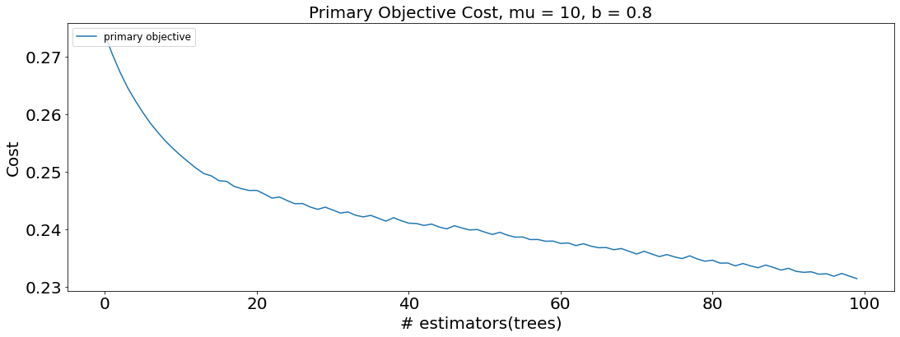
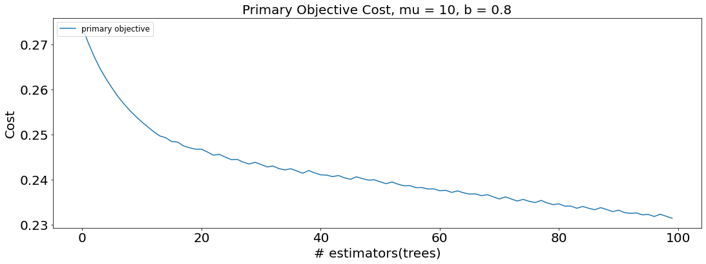

train_data_sample_2 100%[===================>] 41.47M 159MB/s in 0.3s
orig_destination_distance,is_mobile,is_package,srch_adults_cnt,srch_children_cnt,srch_rm_cnt,is_booking,cnt,d1,d2,d3,d4,d5,d6,d7,d8,d9,d10,d11,d12,d13,d14,d15,d16,d17,d18,d19,d20,d21,d22,d23,d24,d25,d26,d27,d28,d29,d30,d31,d32,d33,d34,d35,d36,d37,d38,d39,d40,d41,d42,d43,d44,d45,d46,d47,d48,d49,d50,d51,d52,d53,d54,d55,d56,d57,d58,d59,d60,d61,d62,d63,d64,d65,d66,d67,d68,d69,d70,d71,d72,d73,d74,d75,d76,d77,d78,d79,d80,d81,d82,d83,d84,d85,d86,d87,d88,d89,d90,d91,d92,d93,d94,d95,d96,d97,d98,d99,d100,d101,d102,d103,d104,d105,d106,d107,d108,d109,d110,d111,d112,d113,d114,d115,d116,d117,d118,d119,d120,d121,d122,d123,d124,d125,d126,d127,d128,d129,d130,d131,d132,d133,d134,d135,d136,d137,d138,d139,d140,d141,d142,d143,d144,d145,d146,d147,d148,d149
173.3135,0,0,2,1,1,0,1,-2.18730798456,-2.19921365688,-2.19921365688,-2.19921365688,-2.19921365688,-2.05652701607,-2.19921365688,-2.19921365688,-2.14147178951,-2.19921365688,-2.09449283689,-2.19921365688,-2.11262022307,-2.1937419145700003,-2.19921365688,-2.1892697358400004,-2.19880077561,-2.19789654871,-2.19720657457,-2.19921365688,-2.01842837791,-2.19921365688,-2.19720657457,-2.19921365688,-2.19921365688,-2.19921365688,-2.19921365688,-2.19921365688,-2.18515569902,-2.19921365688,-2.19921365688,-2.19720657457,-2.19921365688,-2.19921365688,-2.19921365688,-2.19921365688,-1.93192146961,-2.19124038877,-2.19921365688,-2.19921365688,-2.19888860595,-2.19921365688,-2.12529171935,-2.14923447977,-2.19921365688,-2.19921365688,-2.19124038877,-2.19921365688,-2.10311662401,-2.19921365688,-2.19921365688,-2.19921365688,-2.07693725914,-2.19921365688,-2.14270320246,-2.15706839465,-2.19921365688,-1.92127979726,-2.19921365688,-2.19921365688,-2.19921365688,-2.1834108678,-2.19921365688,-2.19921365688,-2.19921365688,-2.19921365688,-2.19921365688,-2.19921365688,-2.18147534541,-2.19921365688,-1.8000427139099997,-2.19921365688,-2.18147534541,-2.19841566449,-2.1935662146,-2.19718897512,-2.19899137302,-2.19921365688,-2.19921365688,-2.19921365688,-2.19921365688,-2.19921365688,-2.19921365688,-2.1990721026,-2.19921365688,-2.19921365688,-2.19921365688,-2.18665269041,-2.19720657457,-2.19921365688,-2.11177026934,-2.19921365688,-1.94808266923,-2.19921365688,-2.1932200245,-2.1879566876400003,-2.19720657457,-2.18573696088,-2.19921365688,-2.1952087253,-2.1588979194,-2.19921365688,-2.19921365688,-2.19921365688,-2.19921365688,-2.19720657457,-2.19921365688,-2.13139301227,-2.1981772743400003,-2.19921365688,-2.1932200245,-2.19921365688,-2.19921365688,-2.17344575826,-2.19124038877,-2.19921365688,-2.19921365688,-2.19921365688,-2.19921365688,-2.19921365688,-2.0428280295700003,-2.18118849358,-2.19921365688,-2.19921365688,-2.19921365688,-2.1954205464900003,-2.18730798456,-2.06080227709,-2.19921365688,-2.19921365688,-2.17381838005,-2.12200885943,-2.19921365688,-2.19921365688,-2.19921365688,-2.19921365688,-2.1892697358400004,-2.19921365688,-2.15450666473,-2.1588979194,-2.19921365688,-2.19921365688,-2.19921365688,-2.19921365688,-2.14803462242,-2.19921365688,-2.19921365688,-2.19720657457,-2.19921365688
36.7112,0,0,2,0,1,0,1,-2.29225147315,-2.29943723091,-2.29951639018,-2.08111774245,-2.01272641649,-1.84631088289,-2.25694293284,-2.2419289198500003,-2.29661889811,-2.27289357876,-2.08944597431,-2.29951639018,-2.07369341787,-2.12623021823,-2.29951639018,-1.90708238883,-2.22496898239,-2.13035167283,-2.29951639018,-2.29951249471,-2.28622599442,-2.2949371716900004,-2.29951639018,-2.24878320275,-2.25627922625,-2.27106252833,-2.07758088047,-2.2789245532900004,-2.01919896939,-2.17033430979,-2.29951639018,-2.29951639018,-2.29868226243,-2.13449074923,-2.1817876442200004,-2.29891987723,-1.51031359274,-2.29951638843,-2.29951639018,-2.2727538704700003,-2.12233363475,-2.2646069145200003,-1.861096587,-2.29951049379,-2.24979614841,-2.2599437095200003,-2.29234253518,-2.16916087384,-1.78586420185,-2.28423710917,-2.29355618508,-2.2880450341900005,-2.05052621808,-2.29951639018,-2.19273195665,-2.0559748470500003,-2.28706322107,-1.83595586077,-2.2717180871,-2.29951639018,-2.28358439181,-2.29951639018,-2.29951636728,-2.2711891898400003,-2.29951639018,-2.16604704624,-2.26580484652,-2.290142878,-2.28879572602,-2.29951639018,-2.27611532069,-2.2912463406400003,-2.16569226028,-2.09273216087,-2.12119035029,-2.29875027631,-2.26711502493,-1.87582618779,-2.231525479,-1.89300982035,-2.26256545701,-2.1593817667,-2.26187281285,-2.20483923822,-2.27674009638,-2.29951639018,-2.29943943004,-2.26871127854,-2.29701879781,-2.29951639018,-2.04654483581,-2.29951612093,-1.5615411274899995,-2.0834170963,-2.29951639018,-2.25161524538,-2.16701027975,-2.29951639018,-2.2863131288900003,-2.29951639018,-2.21803808202,-2.25840690625,-2.26918226622,-2.29443436627,-2.29129713595,-2.28877150463,-2.29951639018,-1.88060999312,-2.17263219298,-2.29826579857,-2.29784973368,-2.2505303639400003,-2.29951639018,-2.2883029679,-2.29951639018,-2.29951639018,-2.29868226243,-2.29951639018,-2.29868226243,-2.28223375548,-2.2167933579900003,-1.92421166225,-2.29951639018,-2.29851003895,-2.29907738072,-2.24186831008,-2.29867046062,-2.13543615299,-2.2422272593400003,-1.9868763298700003,-2.29720113035,-1.85824233386,-2.27904131926,-2.2980915226400005,-2.29951639018,-2.07470816125,-2.1293160654400003,-2.29951639018,-1.7357019870400003,-2.29826579857,-2.14536209421,-2.28940517509,-2.29951639018,-2.29340208978,-2.29868226243,-2.29951639018,-2.29322328031,-2.29951639018,-2.21700747965
6027.9528,0,0,5,0,3,0,1,-2.18601998041,-2.28056825772,-2.29019720014,-2.12694256006,-2.09254428558,-1.93225836938,-2.2567418740900003,-2.27487783382,-1.69029654535,-2.2488744229,-2.17512143322,-2.29019720014,-2.04966722954,-2.0227828052400003,-2.29019720014,-2.03677768041,-2.23518049895,-2.25631380196,-2.28890956744,-2.18252697187,-2.28462095615,-2.29019720014,-2.28942416249,-2.27279456232,-2.29019720014,-2.27396892582,-2.2840924795599995,-2.27982640015,-1.98104432747,-2.20639665304,-2.28705979197,-2.286757079,-2.29019720014,-2.2314529776,-2.26233758585,-2.22614170912,-1.56662906645,-2.22430515038,-2.2478515335,-2.28005736508,-2.24519749671,-2.28315036127,-1.80241789844,-2.1100185649200003,-2.23474558019,-2.28443163592,-2.22079500675,-2.27005806999,-1.85442858091,-2.2666461782,-2.284805427,-2.27658628843,-2.21489993542,-2.29019720014,-2.10908043078,-2.04952286912,-2.28629731876,-1.87229237492,-2.28910149153,-2.28644001392,-2.27994462023,-2.29019534473,-2.2886694270400003,-2.28984971827,-2.29019720014,-2.04720731695,-2.28494549908,-2.28672455042,-2.24530755781,-2.29019720014,-2.26459047619,-2.28813881633,-2.2815105658,-2.16383018935,-2.13027684252,-2.12625210231,-2.25149493219,-2.24141905049,-2.27383427636,-2.15056442037,-2.28673884572,-2.28742881559,-2.22781979171,-2.18590453579,-2.13743442502,-2.29019720014,-2.28981906095,-2.08699900326,-2.28788220297,-2.29019720014,-2.05108971688,-2.2896341009,-1.64000539234,-2.28600335514,-2.28150682337,-2.2414787426400005,-2.28890956744,-2.29019720014,-2.28434446096,-2.2659568711,-2.08856323903,-2.22253795707,-1.83087085792,-2.24471361274,-2.22972275521,-2.28019327215,-2.28984196847,-1.8786253951,-2.26484916062,-2.28861425564,-2.26930162243,-2.11915724866,-2.29019720014,-2.06992947498,-2.2638191311400004,-2.29019720014,-2.29019720014,-2.29019720014,-2.28993936801,-2.28243803241,-2.12567656646,-2.0240233856,-2.29019720014,-2.23965883005,-2.28718665775,-2.24254121466,-2.21539626656,-2.08143046069,-2.29019720014,-2.20915053632,-2.20602296922,-2.1397147609,-2.27964232683,-2.10483461346,-2.29019720014,-2.2119380686200003,-2.0461717291,-2.29019720014,-1.82075990551,-2.25360192787,-2.2819954742,-2.28559052961,-2.19656938464,-2.23702637874,-2.25694365822,-2.25443851095,-2.27929366193,-2.29019720014,-2.03120316058
15000.0,0,0,4,0,2,0,1,-2.22419599385,-2.26119948801,-2.26185367538,-2.03289354844,-1.95143161453,-1.97346730388,-2.26185367538,-2.26185367538,-2.18992285201,-2.25660580135,-2.18650921861,-2.26185367538,-2.1790719945,-2.09469335232,-2.26185367538,-2.12907935289,-2.06133554754,-2.24811878996,-2.26185367538,-2.26125806819,-2.13904037137,-2.0924999578400003,-2.26185367538,-2.19460566658,-2.26135594427,-2.25304637363,-2.08565131713,-2.1991328305,-2.10783978263,-2.25642969249,-2.26185367538,-2.23161301391,-2.26185367538,-2.0781141044,-2.07183231045,-2.26174418822,-1.6339833762399998,-2.22734094963,-2.26185367538,-2.2590971845,-2.21168778343,-2.18839856144,-1.9382503167400005,-2.26121959865,-2.20427953229,-2.16791678936,-2.26151415643,-2.2259776664400004,-1.93475785471,-2.24966082651,-2.26180328715,-2.25872922597,-2.05382155346,-2.26184996044,-2.2458394790700003,-2.22037380564,-2.22903781367,-1.87617021491,-2.26158184817,-2.26179605657,-2.26112926603,-2.26185367538,-2.26185367401,-2.2617403302900003,-2.26185367538,-2.16254026064,-2.2148434793000003,-2.26130201546,-2.2463181961200003,-2.26185367538,-2.1148846266900003,-2.2607229762400003,-2.18679474851,-2.0808057481,-2.21818861188,-2.26163731884,-2.07475550982,-2.0501402255400003,-2.26182002503,-1.91806686483,-2.1834712680900004,-2.26140104241,-2.2457616817700004,-2.2364959727,-2.21201035067,-2.26185367538,-2.1568034114,-2.17279381302,-2.26185367538,-2.26180328715,-2.08252457729,-2.26185367538,-1.71205669693,-2.0754534601,-2.26185367538,-2.03961031569,-2.24670467738,-2.1902277602,-2.2611733977,-2.26185367538,-2.26073813092,-2.12210487043,-2.24835331605,-2.26061130004,-2.26063170896,-2.26083591378,-2.26185367538,-1.9099648839400003,-2.09394340511,-2.26185367538,-2.2617404729,-2.2216511064,-2.26185367538,-2.22825211883,-2.26185367538,-2.26185367538,-2.26185367538,-2.26185367538,-2.26185367538,-2.24994713758,-2.20486259346,-2.14997456852,-2.26185367538,-2.20337557574,-2.26185367538,-2.23614135354,-2.26185367538,-2.14471127695,-2.26113680092,-2.06278851398,-2.07524827963,-1.91616339078,-2.25770936008,-2.23591570758,-2.26129268181,-2.22435719139,-2.1004484108000003,-2.26185230556,-1.97361835043,-2.26151415643,-2.1030315709000003,-2.2613776887,-2.26185367538,-2.26185367538,-2.26162729993,-2.26185367538,-2.26185366412,-2.26185367538,-2.24909093915
3856.6132,0,0,1,0,1,0,1,-2.24696072756,-2.17808779039,-2.2506122251,-2.24788585081,-2.13394526832,-1.81520229165,-2.2506122251,-2.2506122251,-2.2506122251,-2.23056465855,-2.22697803961,-2.2506122251,-2.1806387976,-2.04830249715,-2.2506122251,-2.00599560546,-2.09167893128,-2.24388029705,-2.2506122251,-2.24255676581,-2.24745466479,-2.20094287435,-2.2506122251,-2.22306966411,-2.2506122251,-2.2026569847,-2.1377428161900003,-2.24158961085,-1.9965524995400004,-2.15964689283,-2.2506122251,-2.2506122251,-2.2506122251,-2.13890904099,-2.2005211754400005,-2.2503643607900004,-1.5851139117200002,-2.2506122251,-2.2506122251,-2.24768388907,-2.2236386446200003,-2.24755981256,-1.97743107426,-2.2506122251,-2.17808779039,-2.24888801991,-2.20094287435,-2.24818921934,-1.89230405069,-2.17992942942,-2.2506122251,-2.2485794080000003,-1.98723049691,-2.2506122251,-2.2418857945900004,-2.24768388907,-2.2506122251,-1.95577696286,-2.2506122251,-2.2506122251,-2.2506122251,-2.2506122251,-2.2506122251,-2.2506122251,-2.2506122251,-2.2506122251,-2.2506122251,-2.2506122251,-2.2506122251,-2.2506122251,-2.1873000808,-2.2506122251,-2.17709675991,-2.09159474049,-2.09225128957,-2.2506122251,-2.21122849347,-2.14404466629,-2.2506122251,-1.8118717338,-2.1873000808,-2.2506122251,-2.18642032498,-2.06761651765,-2.18234992186,-2.2506122251,-2.1873000808,-2.24596350136,-2.2506122251,-2.2506122251,-2.12086692442,-2.2506122251,-1.61740275031,-2.2506122251,-2.2506122251,-2.24145953397,-2.2506122251,-2.2506122251,-2.25020608952,-2.2506122251,-2.24622709231,-2.2506122251,-2.2506122251,-2.2506122251,-2.24789045241,-2.2506122251,-2.2506122251,-1.80608972824,-2.18595277872,-2.2491455889700003,-2.2506122251,-2.24970750856,-2.2506122251,-2.2506122251,-2.2506122251,-2.2506122251,-2.2506122251,-2.2506122251,-2.2506122251,-2.2506122251,-2.14494828945,-2.04132993987,-2.2506122251,-2.19770592014,-2.2506122251,-2.2506122251,-2.2506122251,-2.22720726721,-2.2506122251,-2.03422129054,-2.2506122251,-2.00919420278,-2.24321612491,-2.2506122251,-2.2506122251,-2.24140529963,-2.11299017593,-2.2506122251,-1.9224319860900003,-2.2491455889700003,-2.25059682252,-2.2506122251,-2.1873000808,-2.1873000808,-2.2506122251,-2.2506122251,-2.2506122251,-2.2506122251,-2.2506122251
6464.1636,0,0,1,0,1,0,1,-2.13894477873,-2.23823095257,-2.23823095257,-2.01365607922,-1.99315180817,-2.00293745867,-2.23823095257,-2.23823095257,-2.14162918085,-2.18356833564,-2.10756584128,-2.23823095257,-2.20639215006,-2.1584428464200003,-2.23823095257,-2.0979625944,-2.19961060013,-2.18356833564,-2.23823095257,-2.2187979019,-2.23766254095,-2.19841423061,-2.23823095257,-2.17806418146,-2.23823095257,-2.2377934548800003,-2.16326005876,-2.23823095257,-2.13787175382,-2.23154648673,-2.23823095257,-2.23769413888,-2.2328924429900003,-2.01316699478,-2.14286112395,-2.2068916126,-1.81294032672,-2.1558196195,-2.23823095257,-2.23555349496,-2.15507688415,-2.22456644542,-2.12213459312,-2.23448711677,-2.20336579166,-2.23823095257,-2.2068916126,-2.20753816791,-1.9888114159,-2.23823095257,-2.23823095257,-2.23782950305,-2.12294950786,-2.2068916126,-2.22111508746,-2.10994298444,-2.07107526028,-2.04163108471,-2.23823095257,-2.23823095257,-2.12005388168,-2.2068916126,-2.23823095257,-2.18356833564,-2.23823095257,-2.16015123966,-2.17153932171,-2.23823095257,-2.18356833564,-2.23823095257,-2.17884787989,-2.23823095257,-2.21894281254,-2.14076445921,-2.22122270757,-2.2373010301900003,-2.0168560923900003,-2.08792106357,-1.9780545591900005,-1.9891689473400005,-2.23823095257,-2.17511596581,-2.2068916126,-2.17244232998,-2.0684877166900004,-2.23823095257,-2.23823095257,-2.18356833564,-2.1544887473700003,-2.23823095257,-2.11138073407,-2.23823095257,-1.83197159787,-2.1783181761700003,-2.22456644542,-2.18808256429,-2.23823095257,-2.23823095257,-2.23823095257,-2.23823095257,-2.23769413888,-2.11957238481,-2.20639215006,-2.155841653,-2.17530529865,-2.23555349496,-2.23823095257,-2.02166890836,-2.2343503792400004,-2.10964623473,-2.23448711677,-2.23823095257,-2.23823095257,-2.23823095257,-2.23823095257,-2.23823095257,-2.20044297872,-2.23715798791,-2.23715798791,-2.23823095257,-2.17851423997,-2.07754945988,-2.23823095257,-2.18356833564,-2.23823095257,-2.23681388938,-2.15537554215,-2.12167871241,-2.23823095257,-2.147532042,-2.22085733774,-2.02171406729,-2.23823095257,-2.23823095257,-2.23823095257,-2.23808005575,-2.13057625921,-2.2068916126,-2.05938663621,-2.23823095257,-2.23823095257,-2.23823095257,-2.23823095257,-2.23823095257,-2.23823095257,-2.07444112384,-2.23823095257,-2.23823095257,-2.2068703214
221.6766,0,0,4,0,1,0,1,-2.25860995379,-2.18757463381,-2.26083456066,-2.1082382951400005,-2.0326764726,-1.86656872548,-2.26083456066,-2.26083456066,-2.18564153032,-1.99821535692,-2.05738851807,-2.26083456066,-2.06930526485,-2.03273607588,-2.26083456066,-2.02440036705,-2.04623527971,-2.23331571379,-2.26083456066,-2.25469462294,-2.07903689021,-2.22563581719,-2.26083456066,-2.17952743751,-2.26083456066,-2.2586411206,-2.08933612024,-2.2577742031400003,-2.00816278107,-2.2101948406200003,-2.26083456066,-2.25750190901,-2.26083456066,-2.20031006385,-2.22072977693,-2.26083456066,-1.68622160281,-2.26083456066,-2.26083456066,-2.23967981644,-2.18348518302,-2.2494171623900003,-2.0311440146,-2.19489806832,-2.26083456066,-2.25972658069,-2.2361818004,-2.2603395353,-1.96846778352,-2.24587267133,-2.25079124804,-2.25752666272,-1.87541417237,-2.26083456066,-2.21778076661,-2.23085361112,-2.26083456066,-1.92130249258,-2.26083456066,-2.26083456066,-2.17325099973,-2.26083456066,-2.26083456066,-2.26083456066,-2.26083456066,-2.12338754266,-2.240019611,-2.26083456066,-2.23384417716,-2.26083456066,-2.16381705449,-2.26083456066,-2.10914160622,-2.17368053444,-2.14425792981,-2.25072689394,-2.18886909545,-2.11675790155,-2.23179403325,-1.98752164401,-2.24587267133,-2.25972083282,-2.21881235885,-2.17574982571,-2.25060148659,-2.26083456066,-2.19588690524,-1.9859171935,-2.25972083282,-2.26083456066,-2.14801835704,-2.26053305869,-1.71927203712,-2.23206936222,-2.26083456066,-2.17046927808,-2.26083456066,-2.18353295482,-2.25697920234,-2.26083456066,-2.2380563876700004,-2.25559989155,-2.17619824333,-2.26083456066,-2.25454829555,-2.25419463656,-2.26083456066,-1.87473371565,-2.1443221145400004,-2.26083456066,-2.25972083282,-2.25969685273,-2.25972083282,-2.18170757977,-2.25972083282,-2.26083456066,-2.26083456066,-2.26083456066,-2.25972083282,-2.24267812405,-2.15790955011,-2.10011143089,-2.26083456066,-2.24960023477,-2.25961317095,-2.24011300618,-2.25860995379,-2.20926147322,-2.24267812405,-2.1739378996700003,-1.97932026964,-1.9182458585,-2.22100062215,-2.2462706316,-2.26083456066,-2.25457833315,-2.18743558381,-2.26083456066,-1.8177207826,-2.25309778567,-2.26083456066,-2.26083456066,-2.26083456066,-2.24267812405,-2.25309778567,-2.26083456066,-2.26083456066,-2.26083456066,-2.24036250207
10372.0472,0,0,2,0,1,0,1,-2.27256440389,-2.24100193624,-2.37491252216,-2.22245847729,-1.86982920934,-1.7093744971200002,-2.23137276,-2.19658794872,-2.2112851104599995,-2.2454380836900003,-2.06336630383,-2.37491252216,-2.09352188407,-1.97185029025,-2.37491252216,-1.8692211117,-2.06822829755,-2.36327425637,-2.37491252216,-2.3744229426,-2.2805486485900004,-2.34307583125,-2.37491252216,-2.31361589755,-2.30239885158,-2.24446757268,-2.22286547286,-2.33913053072,-1.78981808075,-2.28421345222,-2.37491252216,-2.37491252216,-2.37491252216,-2.20811714173,-2.13021044289,-2.37414058032,-1.46941693843,-2.37491252216,-2.37491252216,-2.36654734392,-2.22346383783,-2.36605371706,-1.81115831501,-2.14092186377,-2.20328894288,-2.32789770397,-2.28059756293,-2.318578677,-1.7294176819599998,-2.27819983307,-2.30814414065,-2.35041487403,-2.06403532909,-2.24135309198,-2.32603770048,-2.21820580651,-2.21610575685,-1.82907128382,-2.3727134504400005,-2.37491252216,-2.37007360598,-2.37491252216,-2.37478404221,-2.23994995993,-2.37491252216,-2.1062085635,-2.28540271477,-2.24892130733,-2.37104159232,-2.37491252216,-2.20706687628,-2.36292866791,-2.09505426782,-1.91445701581,-2.0037273589400004,-2.37365181844,-2.23439595801,-2.12088081875,-2.30243523601,-1.84613099912,-2.2361832994,-2.37442676488,-2.21104806614,-2.11612584665,-2.2635003497,-2.37491252216,-2.25076905553,-2.25905413509,-2.37394155032,-2.37414548581,-2.02175237962,-2.37481555211,-1.5164219006,-2.15644460055,-2.37345687726,-2.27247546724,-2.37491252216,-2.37491252216,-2.36699004493,-2.3749083418200003,-2.36863392631,-2.18445479248,-2.16465709563,-2.37389417926,-2.27544744471,-2.37345687726,-2.37491252216,-1.70056188609,-2.15517140784,-2.27949400397,-2.37491252216,-2.06331104793,-2.37442676488,-2.27268461254,-2.37491252216,-2.37491252216,-2.37491252216,-2.37491252216,-2.37394155032,-2.26357079121,-2.28409264477,-1.92372177149,-2.37491252216,-2.37132942659,-2.3735557026,-2.21170118272,-2.37248449929,-2.3047446614,-2.29884095499,-1.7624476132,-2.33121560301,-1.85334295206,-2.30442526165,-2.3371092947400003,-2.37491252216,-2.15385046987,-1.9400424805,-2.3749098439500003,-1.5967449460799998,-2.37442676488,-2.31476077886,-2.37491252216,-2.37491252216,-2.33747962282,-2.37442676488,-2.24108159558,-2.37234869604,-2.37491252216,-2.14203606428
136.4946,0,0,2,2,1,0,1,-2.20737318671,-2.2215897967400005,-2.2215897967400005,-2.2215897967400005,-2.11667837088,-2.0717695707900003,-2.21083143722,-2.20689767464,-2.21687556572,-2.20614008127,-2.18341384982,-2.2215897967400005,-2.16173001387,-2.09620710423,-2.2215897967400005,-1.97858173194,-2.20293282437,-2.17594108839,-2.22015819319,-2.21961612095,-2.2215897967400005,-2.2215897967400005,-2.2187312932700003,-2.2146315641900003,-2.2215897967400005,-2.2169479123,-2.21654488203,-2.2215897967400005,-2.0032234742200004,-2.19607908098,-2.2215897967400005,-2.2074817898,-2.2074817898,-2.2215897967400005,-2.22056500262,-2.2215897967400005,-1.7620458276,-2.2215897967400005,-2.2215897967400005,-2.2187312932700003,-2.2115508134,-2.2215897967400005,-1.9781906343,-2.2215897967400005,-2.22149894291,-2.22094383229,-2.13629310592,-2.18256345861,-1.94929708026,-2.1952756364400003,-2.06695589,-2.20742994163,-2.15237239807,-2.18708137239,-2.16964544729,-1.99347557765,-2.2215897967400005,-2.11671791427,-2.2215897967400005,-2.2215897967400005,-2.18955939306,-2.2215897967400005,-2.2215897967400005,-2.2215897967400005,-2.2215897967400005,-2.2215897967400005,-2.2215897967400005,-2.2215897967400005,-2.21307011815,-2.2215897967400005,-2.1442388371,-2.2215897967400005,-2.20338415208,-2.19664453682,-2.15486898592,-2.2215897967400005,-2.2105417926900004,-2.2215897967400005,-2.00163642449,-2.17805446689,-2.2215897967400005,-2.0778688108,-2.07660946001,-2.19100349475,-2.21995111878,-2.2215897967400005,-2.2215897967400005,-2.2215897967400005,-2.21026696549,-2.2215897967400005,-2.03359918552,-2.2215897967400005,-1.80585197533,-2.11246038804,-2.21589148136,-2.21536034306,-2.22015819319,-2.2215897967400005,-2.2215897967400005,-2.22147363031,-2.21730906616,-2.21039924741,-2.18708137239,-2.2215897967400005,-2.21586212836,-2.2215897967400005,-2.2215897967400005,-2.02129857224,-2.18714519275,-2.16794025951,-2.2215897967400005,-2.2215897967400005,-2.21730906616,-2.20812655618,-2.2215897967400005,-2.2187312932700003,-2.21589148136,-2.21730906616,-2.17899326637,-2.22158850772,-2.1242360389900004,-2.01984806048,-2.2215897967400005,-2.2215897967400005,-2.2215897967400005,-2.2188819617,-2.2215897967400005,-2.05586775259,-2.2215897967400005,-2.1989915574900003,-2.21702568155,-2.11660190475,-2.2215897967400005,-2.2215897967400005,-2.2215897967400005,-2.13487138744,-2.19381769717,-2.2215897967400005,-2.01735460027,-2.21307011815,-2.1028227807700004,-2.21891786842,-2.2215897967400005,-2.2149546101900004,-2.2215897967400005,-2.2215897967400005,-2.2215897967400005,-2.2215897967400005,-2.21905277372


 
